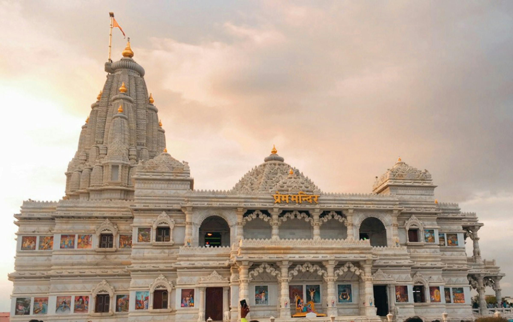
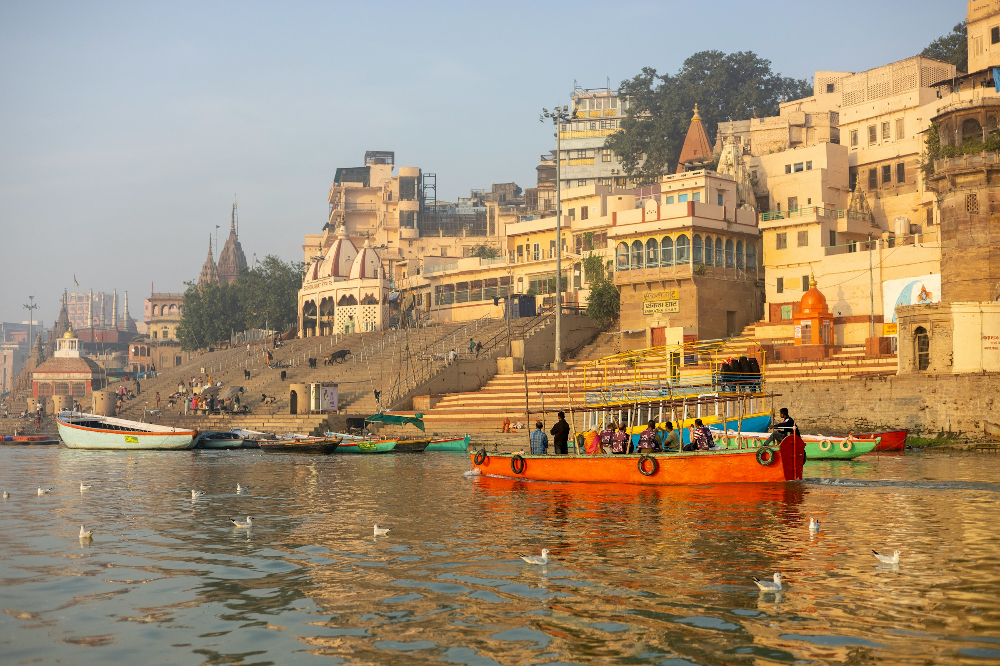

Uttar Pradesh — Where India’s Soul Lives Through Time
Uttar Pradesh stands as one of India’s most culturally profound regions—a land where history, spirituality, art, and everyday life flow together like the sacred rivers that nourish its plains. Often described as the heartland of India, Uttar Pradesh has shaped the country’s civilizational journey for thousands of years. Its cultural legacy is not confined to monuments or museums; it lives in rituals, languages, music, cuisine, and the collective memory of its people.
The spiritual foundation of Uttar Pradesh is unmatched. Cities like Varanasi, Ayodhya, Mathura, and Prayagraj are not just destinations but living centers of faith. Varanasi, considered one of the oldest continuously inhabited cities in the world, embodies Hindu philosophy in its purest form—where life, death, and liberation coexist along the ghats of the Ganga. Ayodhya is revered as the birthplace of Lord Rama, while Mathura and Vrindavan celebrate the divine life of Lord Krishna through festivals, songs, and devotion. Prayagraj’s Kumbh Mela, the largest religious gathering on Earth, reflects the timeless spiritual magnetism of the land.
Historically, Uttar Pradesh has been the seat of powerful empires and intellectual movements. From the Mauryas and Guptas to the Mughals and Nawabs, each era left behind architectural and cultural imprints. The Taj Mahal, a UNESCO World Heritage Site, stands as a global symbol of love and Mughal artistic excellence. Fatehpur Sikri, Agra Fort, and Bara Imambara showcase a fusion of Persian, Central Asian, and Indian aesthetics. These structures are not mere stone monuments; they narrate stories of ambition, devotion, artistry, and human emotion.
and literature form another cornerstone of Uttar Pradesh’s cultural wealth. The state is the birthplace and nurturing ground of Hindi and Urdu literature, producing legendary poets and writers like Tulsidas, Kabir, Mirza Ghalib, and Premchand. Awadhi and Braj Bhasha enriched devotional poetry, while Urdu flourished in courts and cultural centers like Lucknow. This literary tradition reflects deep philosophical inquiry, social reform, romance, and devotion—mirroring the diversity of human experience.
arts in Uttar Pradesh hold classical prestige. Kathak, one of India’s eight classical dance forms, originated here, blending storytelling, rhythm, and expressive movement. Classical music thrived under royal patronage, especially in the Lucknow and Banaras gharanas, contributing significantly to Hindustani classical music. Folk traditions such as Rasiya, Kajri, and Nautanki bring color, humor, and emotion to rural life, ensuring culture remains accessible and participatory.
Pradesh’s craftsmanship reflects patience, skill, and centuries-old traditions. Lucknow’s Chikankari embroidery, Moradabad’s brassware, Bhadohi’s carpets, and Firozabad’s glass bangles are globally admired. These crafts are not only economic activities but cultural expressions passed down through generations, often within families, preserving identity and heritage.
in Uttar Pradesh tells its own story of cultural synthesis. From the refined Awadhi cuisine—with dishes like kebabs, biryani, and korma—to simple vegetarian temple foods and festive sweets like peda and jalebi, food here reflects both royal indulgence and spiritual simplicity. Each region adds its own flavor, shaped by history, climate, and belief.
, Uttar Pradesh’s cultural legacy lies in its continuity. Despite modern change, traditions remain rooted in daily life—through festivals, rituals, oral storytelling, and community bonds. Uttar Pradesh is not just a witness to India’s past; it is a living embodiment of it, carrying forward a heritage that continues to shape the nation’s identity and spirit.
Sri Ram Janmbhoomi Mandir

Sri Prem Mandir
Sri Ganga Aarti

Varanasi Nagari
Here soul meets Devotion